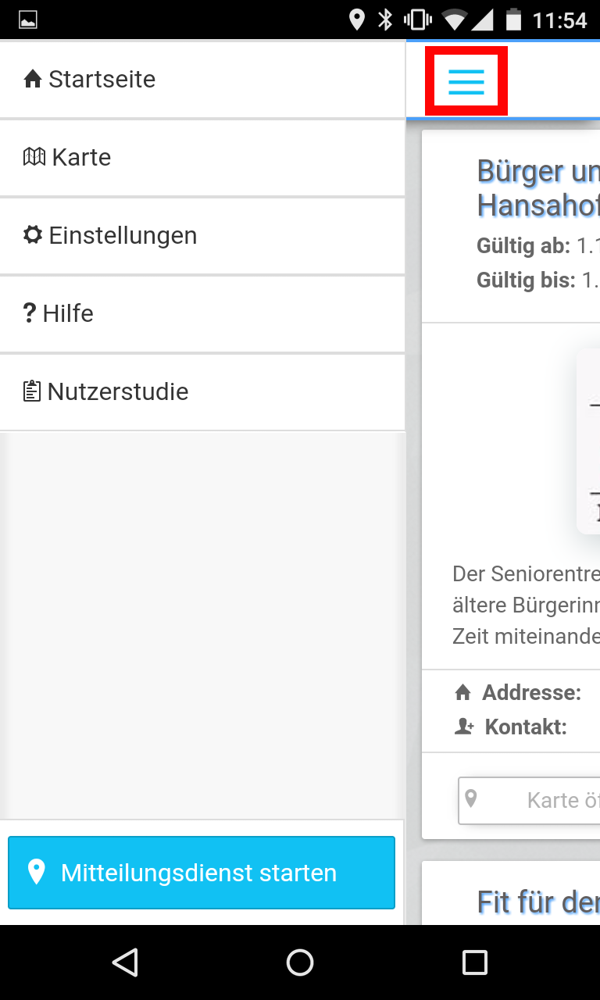
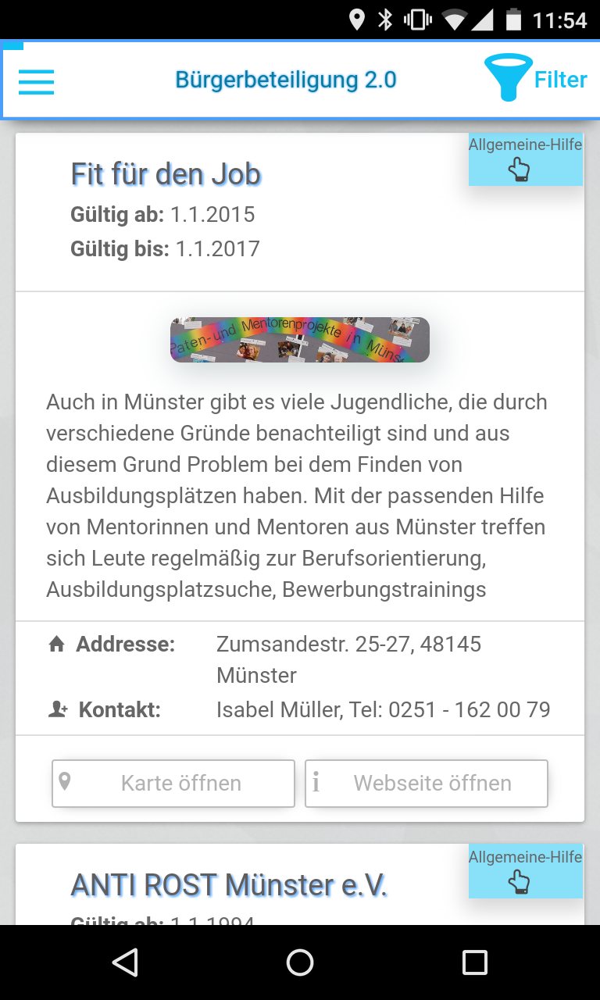
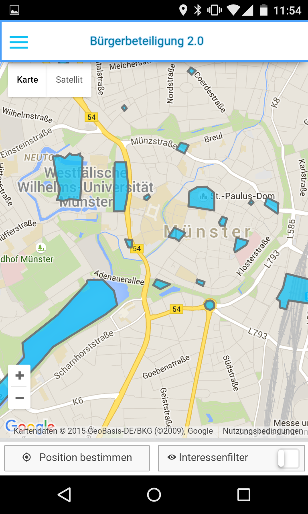
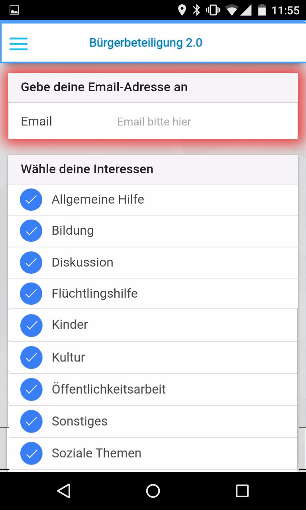
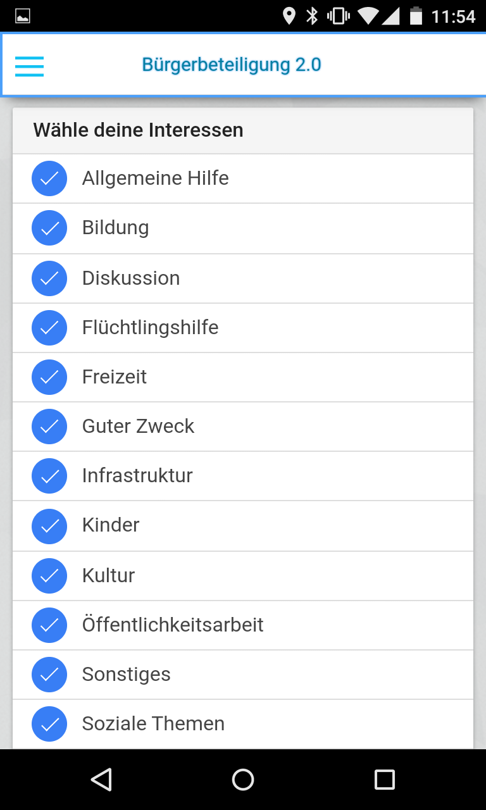
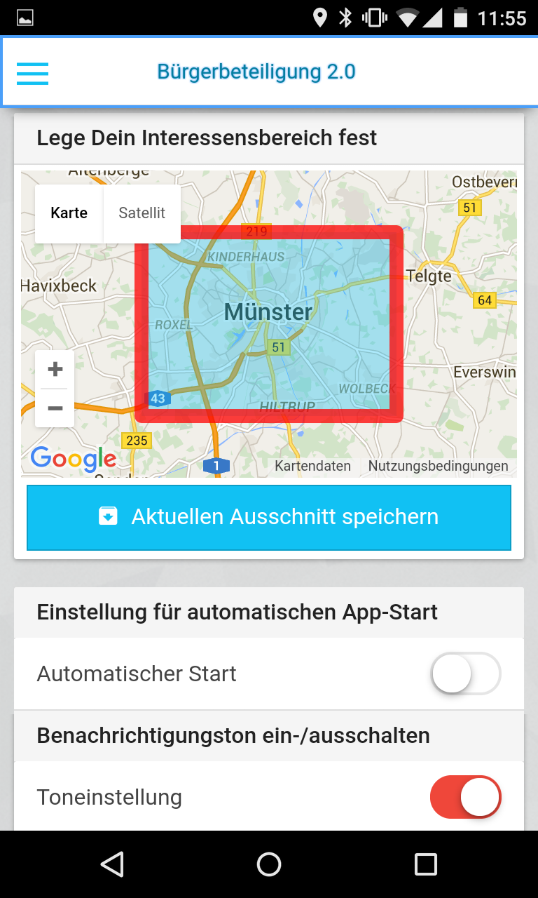
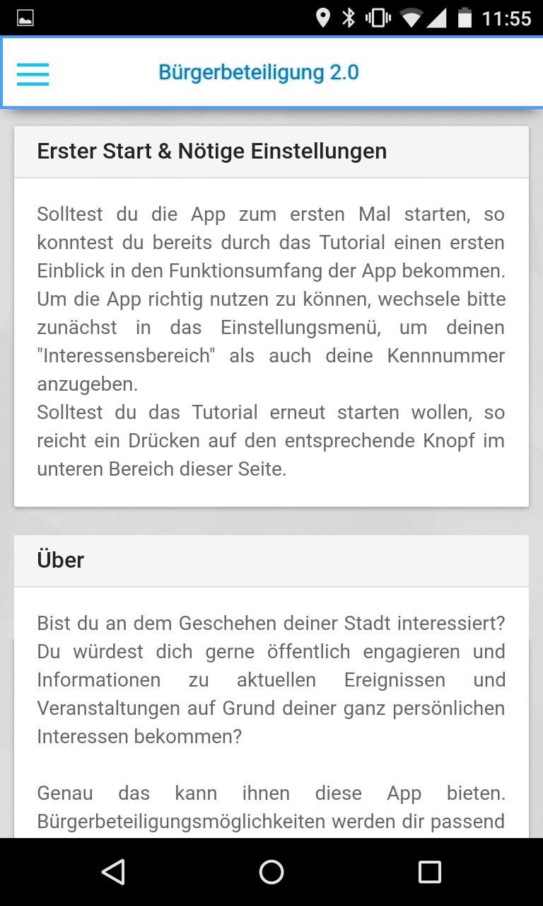
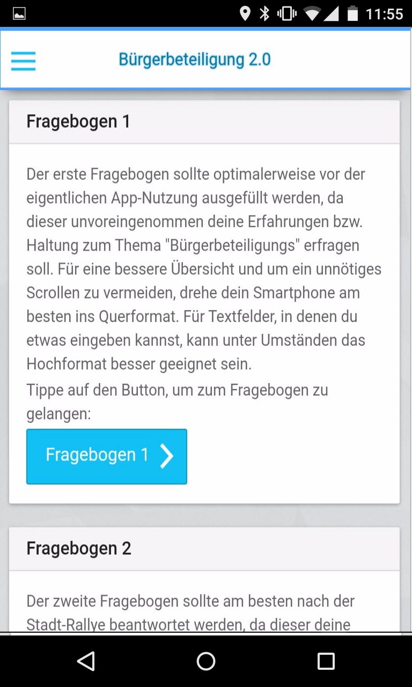

Bürgerbeteiligung 2.0 - Eine App, dein Münster
Du bist an dem Geschehen deiner Stadt interessiert und würdest dich gerne öffentlich engagieren und Informationen zu aktuellen Ereignissen und Veranstaltungen aufgezeigt oder sogar vorgeschlagen bekommen? Mit der "Bürgerbeteiligung 2.0"-App erhältst du die Möglichkeit deine Stadt von einer völlig anderen Perspektive zu entdecken. Dir werden Projekte, Initiativen und Events präsentiert, welche genau auf deine Interessen zugeschnitten sind. Individualität wird hierbei groß geschrieben, denn die entsprechenden Vorschläge berücksichtigen...
-
... deine thematischen Interessen. Sprich, ob man du dich beispielsweise für Projekte mit dem Thema "Guter Zweck", "Flüchtlingshilfe", "Kultur" etc. interessierst.
-
... das geographische Interessensgebiet. Heißt, dass du die die Möglichkeit hast, gezielt (nur) Projekte in bestimmten Gebiet vorgeschlagen zu bekommen.
-
... den zeitlichen Aspekt der vorhandenen Bürgerinitiativen. Abgelaufene und nicht mehr aktive Projekte werden dir nicht mehr vorgeschlagen.
-
... deine aktuelle Position. Du erhältst Vorschläge basierend auf deinem aktuellen Standort. Wenn du in der Nähe einer Bürgerinitiative bist, die laut deinen Interessen relevant ist, bekommst du eine Benachrichtigung direkt auf dein Smartphone.
Thematischer Rahmen & Worum geht es?
Im Kontext meiner Masterarbeit am Institut für Geoinformatik untersuche ich, inwiefern eine Smartphone-App Nutzer dazu (eher) motivieren kann, sich im Bereich von Bürgerbeteiligung engagieren als wen dies mit Flyern, Aushängen oder Webseiten möglich wäre. Zu diesem Zweck erhältst du als Nutzer Bürgerbeteiligungsvorschläge als Benachrichtigung direkt auf dein eigenes Handy.
Um jedem Nutzer ein gleiches Verständnis des Themas zu ermöglichen, sind die wichtigsten Schlüsselbegriffe im Folgenden aufgelistet:
-
Bürgerbeteiligung beschreibt die aktive Teilnahme an Projekten, Prozessen, Diskussionen oder allgemein Aktivitäten (auch politischer Natur), welche das Stadtbild und/oder die Stadtentwicklung betreffen. Dabei werden „höhere Formen“ der Stadt-Organisation und Kooperation angestrebt.
-
Bürgerbeteiligungsmöglichkei können Aktionen, Projekte, Diskussionen oder andere Initiativen sein, an denen Bürger teilnehmen können.
-
Bürgerengagement charakterisiert die Bereitschaft beziehungsweise die allgemeine Motivation, sich aktiv an entsprechenden Projekten, Events, Diskussionen oder ähnlichen zu beteiligen.
-
ePartitzipation umfasst alle internetgestützten Verfahren, die eine Beteiligung von Bürgern an Entscheidungs- und Teilnahmeprozessen ermöglichen.
Mach mit! -> Voraussetzungen
Du möchtest die App gerne ausprobieren und entdecken, was in und um Münster möglich ist? Kein Problem, sofern die folgenden Voraussetzungen erfüllt sind:
- Du besitzt ein Android-Smartphone.
- Dein Smartphone hat mindestens Android in Version 4.4 installiert. Die Android-Version kannst du in den Handy-Einstellungen im Menüpunkt "Über das Telefon" oder "Info" nachsehen. Die App wurde erfolgreich unter anderem auf den folgenden Geräten getestet: Moto G (1st, 2nd, 3rd Gen), HTC One M7, HTC One Max, Nexus 4, Nexus 5, Galaxy S5, LG G2, Sony Xperia Z3.
- Du aktivierst die Standort-Dienste deines Smartphones. Ohne das diese aktiviert werden, funktioniert die Kernfunktion, nämlich das Vorschlagen von Bürgerbeteiligungsoptionen auf Basis deines aktuellen Standortes, nicht. Bevor du den "Bürgermitteilungsdienst" startet, wirst du automatisch danach gefragt.
Mach mit -> App Download
Die "Bürgerbeteiligung 2.0"-App ist im Google PlayStore verfügbar und kann so bequem und unkompliziert auf dein Smartphone installiert werden. Darüber hinaus wirst du wie gewöhnlich auch über App-Updates informiert. Klicke auf den Google-Play Banner und installiere die App auf dein Smartphone.

Natürlich kannst du die App auch direkt aus dem Google Play Store herunterladern. Suche zu diesem Zweck nach Bürgerbeteiligung 2.0 (Herausgeber "ifgi Institute for Geoinformatics Münster"), klicke auf den Google PlayStore Banner oder scanne den hier abgebildeten QRCode und installiere die Anwendung.
Deine "Aufgaben"
Bevor du die App effektiv nutzt, würdest du mir mit dem Ausfüllen eines Fragebogens sehr helfen. Dieser sollte optimalerweise vor der eigentliche App-Nutzung beantwortet werden, da dieser unvoreingenommen deine allgemeine Haltung und Interessen im Bereich "Bürgerbeteiligung" abfragt. Den Link findest du entweder in der App im "Nutzerstudien-Menü" oder hier: >Fragebogen 1 - Vor der Nutzungsphase<
Um deine Erfahrungen mit der "Bürgerbeteiligungs-App 2.0" kennen zu lernen, würde ich mich freuen, wenn du nach einer Nutzungsphase von rund 1,5 Wochen einen zweiten Fragebogen ausfüllen würdest. Den entsprechenden Link findest du entweder ebenfalls in der App oder hier: >Fragebogen 2 - Nach der Nutzungsphase<
Um die App zu nutzen und Bürgerbeteiligungsmöglichkeiten vorgeschlagen zu bekommen, musst du einzig und allein deine Email-Adresse in den Einstellungen angeben. Damit meldest du dich für den Dienst an - wenn du nun auf die "Mitteilungsdienst starten"-Schaltflächen tippst sind alle nötigen Schritte bereits erledigt.
Spzierst du mit angeschaltetem Dienst durch Münster, gehst einkaufen oder bewegst dich allgemein durch Münster, solltest du je nachdem wo du dich befindest spannende Projekte vorgeschlagen bekommen.
Wird eine Benachrichtigung ausgelöst, dann kannst du durch Tippen auf diese herausfinden, welche/s Initiative/Projekt sich direkt in deiner unmittelbaren Nähe befindet. Zusätzlich zu den Funktionen, die du auch in der normalen Karteikartenansicht hast, nämlich die Webseite zu öffnen und euch das Projekt in der Karte anzuschauen, kannst du das Projekt "liken". Möchtest du zukünftig nicht mehr über dieses Projekt informiert werden, reicht ein tippen auf das kleine "x" oben links in der Karteikarte.
Selbstverständlich kannst du auch deine Interessen und ein "geographisches Interessengebiet" in den Einstellungen ändern. Wie das geht, wird dir entweder im Tutorail der App gezeigt, welches beim ersten Start automatisch startet oder im App-Kurzüberblick.
Die App - Ein kurzer Überblick
Nachdem du die App installiert hast, startet nach einem kurzen Augenblick automatisch ein Tutorial, welches dir die wichtigsten Schritte und Funktionen aufzeigt. Nachdem du das Tutorial beendet hast, kannst du natürlich gerne auch auf eigener Faust die Funktionen kennen lernen!
-
App-Navigation
Über den rot markierten Button öffnest du die App-Navigation.
 -
Startseite
Du erhältst eine Übersicht über existierende Bürgerbeteiligungsmöglichkeiten wie Projekte und Initiativen in einer Art Karteikartenübersicht. Über die beiden Schaltflächen auf den "Karteikarten" hast du die Möglichkeit, die entsprechende Webseite zu öffnen oder nachzusehen, wo sich das Projekt befindet. Über den Button oben rechts, lassen sich die angezeigten Projekte filtern oder sortieren.


-
Karte
Du kannst entweder alle Bürgerbeteiligungsmöglichkeiten in der Karte anzeigen oder nur diese, die deinen definierten Interessen entsprechen. Die Karte selbst kannst du wie jede digitale Karte nutzen. Das heißt: Zoomen, den Kartenausschnitt bewegen oder auf die hervorgehobenen Gebiete tippen, um weitere Infos darüber zu bekommen.
 -
Einstellungen
-
Email: Gebe deine Email-Adresse an, um dich für den Dienst anzumelden. Die Adresse wird streng vertraulich behandelt und es wird zu keinem Zeitpunkt an dritte weitergeleitet.
 -
>Interessen: Über das Aktivieren/Deaktivieren kannst du individuell festlegen für welchen Themen du dich interessierst. Um die App-Möglichkeiten zu entdecken, kannst du natürlich zu Anfang alle Themen aktiviert lassen ;)
 -
>Interessengebiet: Lege fest, in welchem Bereich du benachrichtigt werden möchtest. Münster-City, Gievenbeck, Süd-Viertel oder ganz Münster? Verschiebe die Karte, ändere den Detailstufe und tippe im Anschluss auf "Aktuellen Ausschnitt speichern". Auch hier gilt: Um die App-Möglichkeiten am umfassensten zu entdecken, kannst du natürlich zu Beginn den Ausschnitt auf ganz Münster belassen.
 -
>Weitere Einstellungen wie "Automatischer Start, Toneinstellung oder Updateintervall" sind ebenfalls möglich. Solltet ihr später für bestimmte Projekte die Benachrichtigung ausgeschaltet haben (nachdem ihr auf eine Benachrichtigung getippt habt, könnt ihr diese mit Klick auf das kleine Kreuz oben links in der Karteikarte deaktivieren), so könnt ihr diese wiederherstellen.
-
-
Hilfe
Hier bekommst du Infos über die App und die Möglichkeit, das Tutorial erneut zu starten.
 -
Nutzerstudie
Das Nutzerstudien-Meü - ein wichtiger Teil für mich! Über die beiden Buttons gelangt ihr zu den Fragenbögen, mit denen du mir durch ein Ausfüllen sehr helfen kann. Fragebogen 1: Diesen optimalerweise vor der eigentlichen App-Nutzung ausfüllen - Fragebogen 2: Diesen bitte nach der App-Nutzung ausfüllen.

Datenschutz
Alle gesammelten Daten werden streng vertraulich behandelt und sofern nötig, anonymisiert gespeichert. Zu keiner Zeit erfolgt eine Weitergabe an Dritte. Deine Poisitionsdaten werden ausschließlich für das Vorschlagen von Bürgerbeteiligungsmöglichkeiten genutzt und werden unmittelbar danach unwiederruflich gelöscht.